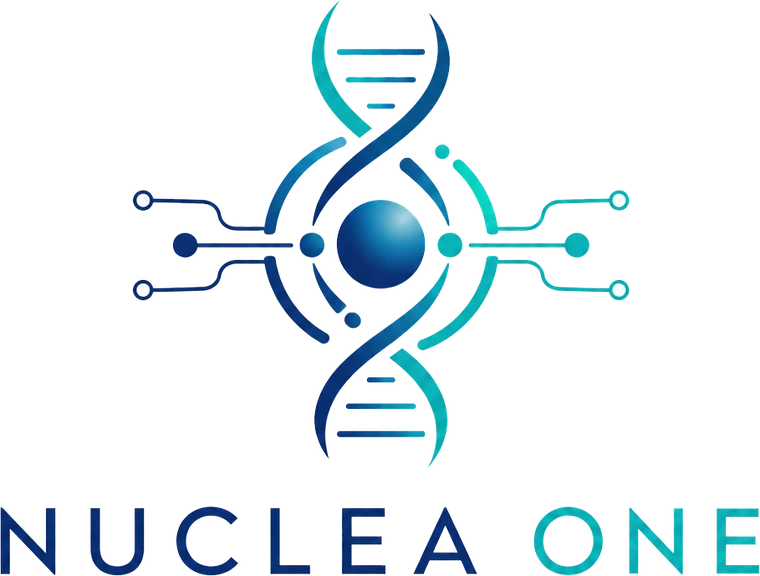

Lise térmica em microcanal
Rompimento celular por elevação controlada de temperatura em filme resistivo fino de Pt/ITO, com resposta térmica em segundos devido à baixa massa do canal.
Validado isoladamente
IBLT · Desafio técnico aberto · 2026A NUCLEA ONE é uma plataforma microfluídica de extração de DNA por nanopartículas superparamagnéticas. Ela existe como conceito formulado e como evidência dispersa na literatura. Não existe, ainda, como dispositivo.
A literatura valida, isoladamente, cada um dos três princípios físicos que sustentam a NUCLEA ONE. Lise térmica em microcanal, captura de ácidos nucleicos por nanopartículas funcionalizadas e separação magnetoforética em escoamento laminar são fenômenos descritos, reprodutíveis e publicados.
O que não foi proposto é a integração monolítica dos três em um único substrato, sob um único regime de escoamento e um único orçamento térmico. É exatamente aí que a tecnologia deixa de ser leitura de artigo e passa a ser problema de engenharia — e é exatamente aí que ela está parada.
Rompimento celular por elevação controlada de temperatura em filme resistivo fino de Pt/ITO, com resposta térmica em segundos devido à baixa massa do canal.
Validado isoladamenteAdsorção de DNA em nanopartículas superparamagnéticas com casca de sílica e funcionalização por polietilenoimina, explorando interação eletrostática com o esqueleto fosfatado.
Validado em bateladaRetenção e liberação das partículas por gradiente de campo externo em microcanal serpentina, com número de Reynolds muito inferior à unidade.
Validado isoladamenteNenhum destes elementos é, por si só, novidade. A contribuição pretendida da NUCLEA ONE está na arquitetura de integração — e é essa arquitetura que ainda não possui desenho de engenharia nem rota de fabricação definida.
O que você acabou de ver é uma representação. Não é um desenho de engenharia.
Nenhuma cota dessa imagem foi verificada contra um processo de fabricação real. Não há tolerâncias, não há especificação de selagem, não há análise de deformação térmica do substrato, não há malha de simulação. Entre esta representação e um dispositivo existe um artefato que a NUCLEA ONE ainda não possui — e obtê-lo é o primeiro gargalo.
A 95 °C, o polímero mais barato para prototipagem — PMMA, com transição vítrea próxima de 105 °C — opera a poucos graus do seu limite estrutural. Trocar por COC resolve a térmica e encarece o ferramental. Não existe escolha neutra: cada rota de material redefine a geometria, a selagem e o custo.
Antes de qualquer cotação de fabricação, é necessário um pacote de projeto completo. Não se trata de uma ilustração tridimensional: trata-se de um conjunto de artefatos técnicos verificáveis, cada um com critério de aceitação próprio.
O perfil necessário combina microfluídica, magnetismo aplicado, transferência de calor e manufatura de polímeros. Plataformas de projetistas entregam modelagem tridimensional — não entregam projeto microfluídico manufaturável, porque o gargalo não está no software, está no julgamento de engenharia.
Grupos acadêmicos publicam geometria e resultados, mas raramente liberam o pacote de fabricação com tolerâncias, parâmetros de processo e especificação de selagem. A informação que falta é justamente aquela que separa a reprodução conceitual da produção física.
A competência tende a estar concentrada em foundries e empresas de dispositivos, sob acordos de confidencialidade e cláusulas de não concorrência. O especialista disponível no mercado aberto é a exceção, não a regra — e localizá-lo é, em si, um problema de prospecção.
Os dois gargalos não são independentes. Eles se alimentam, e é essa realimentação — não a dificuldade científica — que mantém a tecnologia estacionada.
Cada rota de fabricação impõe uma geometria diferente. Escolher a rota não é uma decisão posterior ao desenho — é uma condição para desenhá-lo. E a etapa que mais reprova protótipos não é a usinagem do canal: é a selagem.
O levantamento cobre chips microfluídicos de extração de ácidos nucleicos. A consequência prática é direta: quem detém o conhecimento codificado detém também a linha de fabricação, os fornecedores de inserto e a cadeia de nanopartículas.
Ignorar esse dado não protege o projeto — apenas o mantém desinformado sobre o estado da arte que já está protegido.
Levantamento de prospecção conduzido pelo IBLT sobre famílias de patentes nas bases CNIPA, EPO e USPTO, para as classificações relacionadas a dispositivos microfluídicos de preparo de amostra. Percentual referente a depósitos, não a patentes concedidas. A validação e a atualização desse levantamento integram o escopo do desafio.
A sequência abaixo é uma proposta de encaminhamento, não uma solução fechada. Cada estágio tem um entregável verificável e um critério de saída — quem propuser um caminho melhor, com justificativa técnica, terá proposto a resposta certa para este desafio.
Mapeamento sistemático de foundries de microfluídica em polímero e análise de famílias de patentes por jurisdição, identificando quem efetivamente fabrica arquiteturas equivalentes e sob quais restrições de propriedade intelectual.
Abordagem direta a projetistas e foundries com solicitação de informação e de cotação preliminar, sob acordo de confidencialidade, incluindo auditoria de capacidade: tolerâncias praticadas, métodos de selagem disponíveis e histórico em dispositivos análogos.
Elaboração do conjunto completo de engenharia — layout, modelo tridimensional, simulação multifísica e revisão de manufaturabilidade — desenvolvido já sob as restrições da rota escolhida e submetido a verificação independente.
Fabricação do primeiro lote e ensaio integrado das três zonas funcionais em ambiente laboratorial, com métricas de rendimento e pureza do DNA extraído comparadas ao método de referência em coluna.
Não estamos pedindo uma resposta teórica. Estamos pedindo um caminho executável: como encontrar, qualificar e contratar quem desenha e quem fabrica — inclusive fora do Brasil.
Participantes de destaque têm possibilidade real de contratação na equipe técnica do projeto NUCLEA ONE, no IBLT.
Participação direta na frente de prospecção com a China, incluindo contato técnico com foundries e análise de famílias de patentes.
O trabalho desenvolvido é aproveitável como estudo de caso, TCC ou artigo, com coautoria e crédito integral.